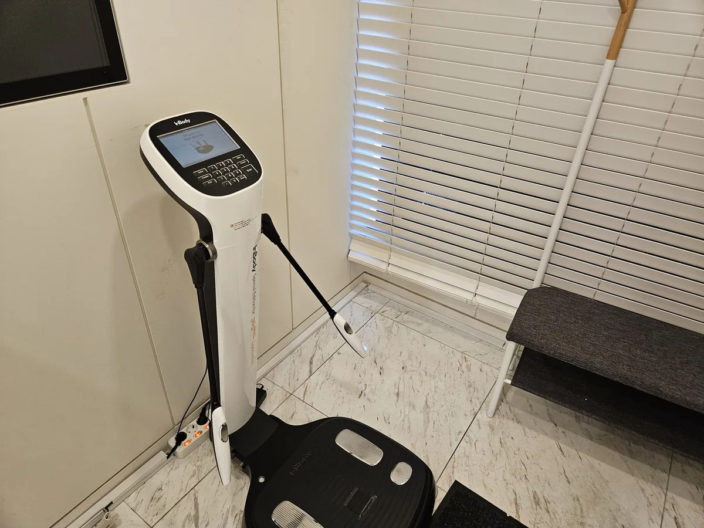

대구팔뚝지방흡입, 팔을 들었을 때와 내렸을 때 라인이 다른 이유

팔뚝은 팔을 들 때 처지는 뒤쪽과 내렸을 때 두꺼워 보이는 바깥쪽이 다른 고민입니다. 부위별 지방 분포와 겨드랑이·등으로 이어지는 연결, 피부 탄력에 따른 범위를 정리했습니다.
뒤쪽 처짐과 바깥쪽 두께는 다릅니다
팔을 들었을 때 흔들리는 뒤쪽(삼두 부위)은 지방과 피부 늘어짐이 함께 관여하고, 팔을 내렸을 때 두꺼워 보이는 바깥쪽은 지방 두께가 주된 원인입니다. 어느 쪽이 고민인지에 따라 흡입 범위와 피부 평가가 달라집니다.
겨드랑이와 등으로 이어지는 연결
팔뚝만 줄이면 겨드랑이 앞뒤의 지방과 등 윗부분이 상대적으로 두드러질 수 있습니다. 소매 라인과 브래지어 라인을 함께 보고 범위를 정하는 이유입니다.
피부 탄력에 따라 범위가 달라집니다
팔뚝 피부는 얇아 과도하게 빼면 늘어짐이 두드러질 수 있습니다. 탄력이 낮은 경우 보수적인 범위를 권하거나 다른 방법을 함께 설명받습니다.
상담 전 확인할 내용
- 팔을 들었을 때·내렸을 때 각각 신경 쓰이는 부위
- 겨드랑이 앞뒤와 등 윗부분의 두께
- 피부 탄력(흔들리는 정도)과 체중 변화 이력
위험과 주의사항
통증, 부종, 멍, 감염, 혈종·장액종, 피부 요철과 비대칭, 감각 이상, 피부 늘어짐이 생길 수 있습니다. 드물게 혈전·지방색전 등 중대한 합병증과 마취 관련 위험이 보고됩니다. 심한 통증·발열·호흡곤란은 즉시 연락해야 합니다.
본 글은 상담 준비를 위한 일반 정보입니다. 국내 사용 제품·장비와 허가사항, 개인별 적용 여부와 회복은 의료진의 진료를 통해 확인하세요.
대구팔뚝지방흡입 시술별 적용 여부와 주의사항 더 보기 ↗카테고리 팔뚝 지방흡입